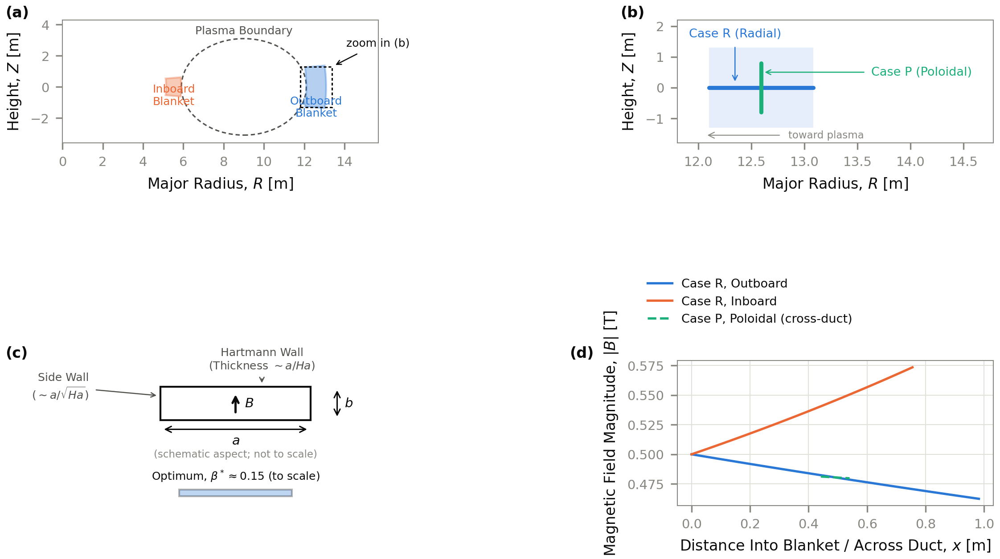
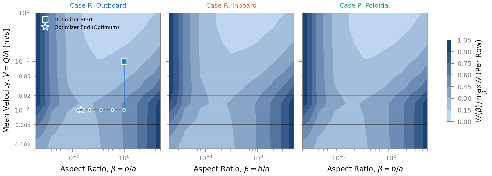
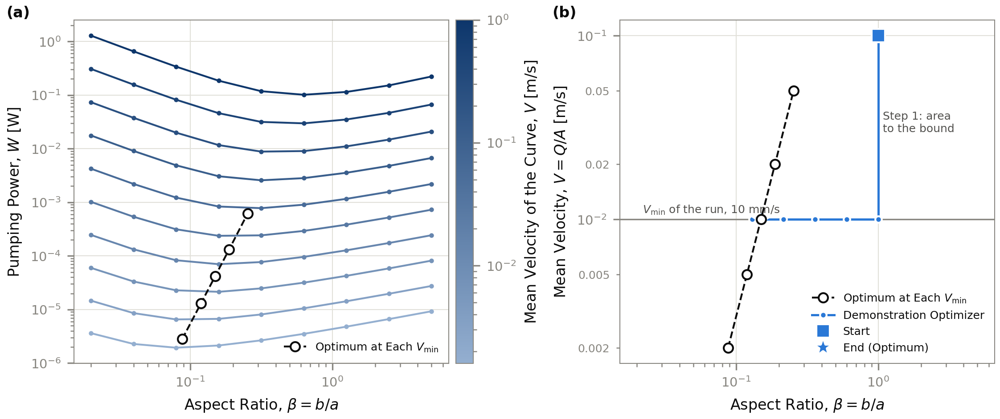
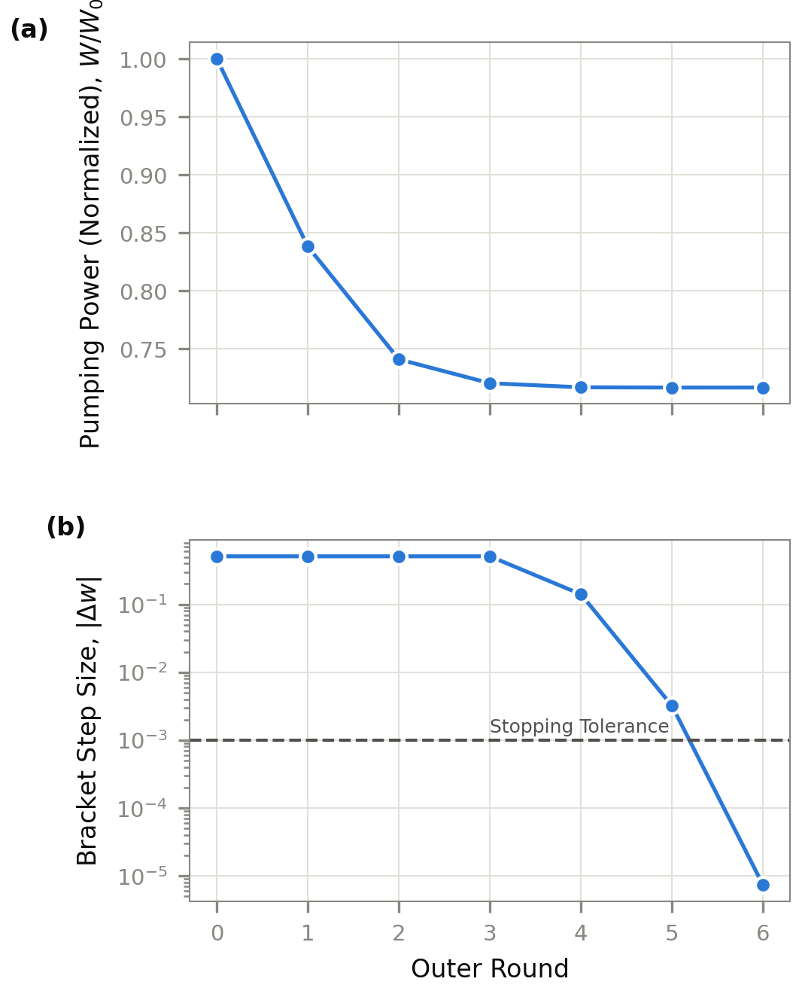
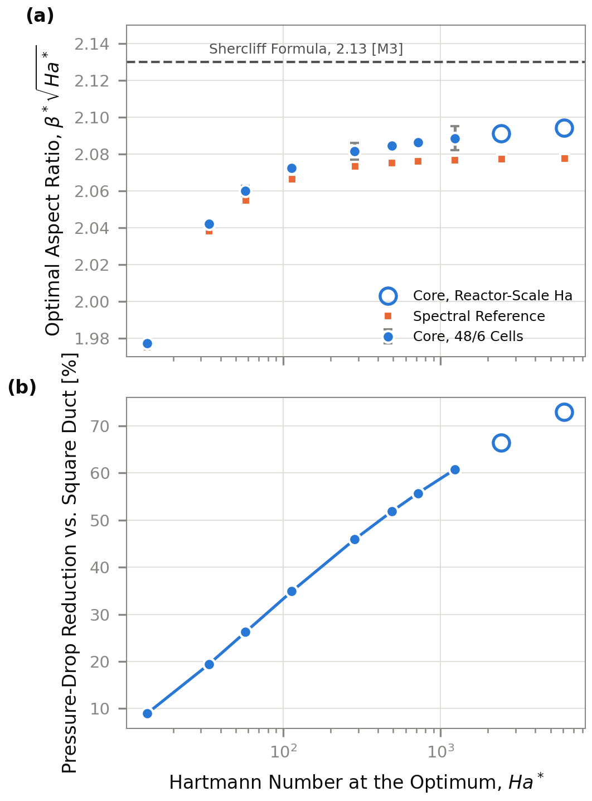
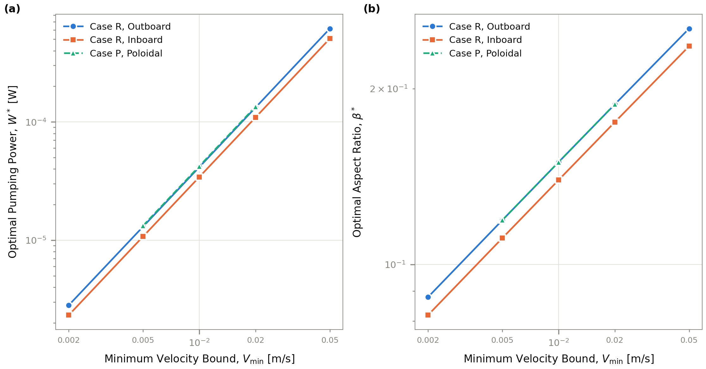
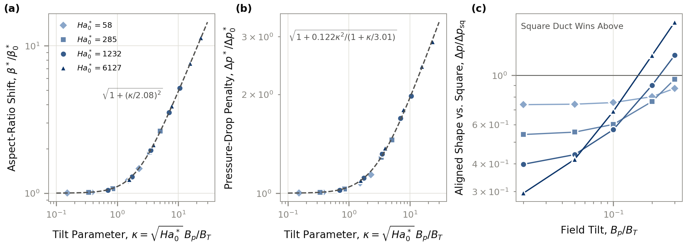
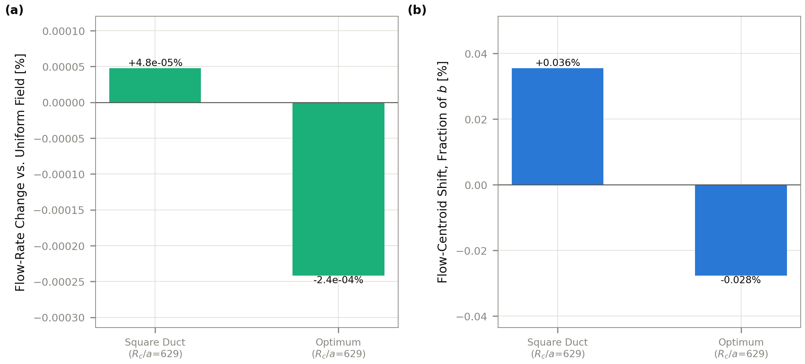
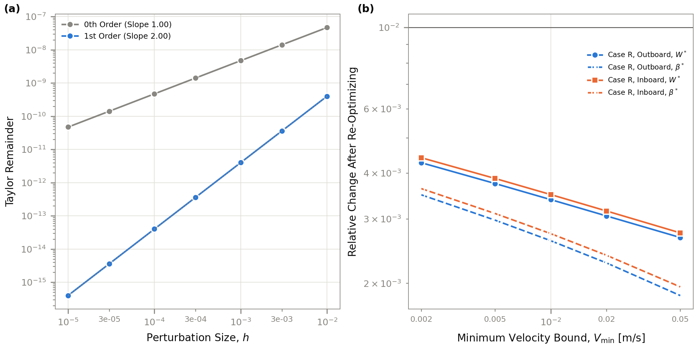
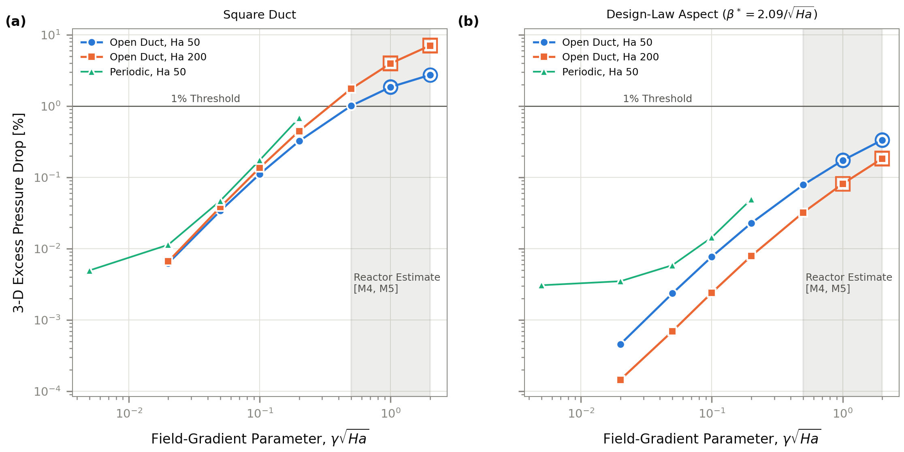

At fixed flow, an insulated PbLi blanket duct in a strong magnetic field has an interior optimum aspect ratio. Nishio et al. computed that optimum in 2025. This study states it as a law, β*√Ha* → 2.08 from Ha* 14 to 6,109, checks it against an independent spectral solver and open-duct 3-D solves, and measures how it moves when the field tilts off the walls.
Draft — not yet posted to the 3b.3 issueA straight PbLi duct with insulated walls sits in a strong, spatially varying tokamak field. The pumping power needed to push a fixed flow rate Q through it depends on the duct's cross-section: its half-width a along the field (the Hartmann walls) and its half-width b across it (the side walls), with aspect ratio β = b/a. The question: for fixed Q and a lower bound on the mean velocity, V ≥ Vmin (a proxy for heat removal), what shape minimizes the pressure drop?
Two duct orientations are modeled, both placed in the EU DEMO radial build [M1]:
A duct running from the first wall into the blanket at the midplane. The toroidal field varies as 1/R along its axis: it falls 8% along the outboard duct (0.982 m) and rises 14% along the inboard one (0.755 m). It is modeled as a sum of independent 2-D cross-section solves at six stations along the axis (“locally fully developed”), each at its own local field.
A vertical duct at the outboard midplane, upward-flow leg. Its field varies across the duct instead of along it, and LMhdX solves the exact curl-free 1/R field on the cross-section. Case P's optimum matches Case R outboard's to four digits and its pumping power differs only by the duct length, so it serves as a check on the field handling rather than as a separate design. Buoyancy matters in a heated vertical duct and is out of scope: this is a forced-flow hydraulic result only.

In (u, w) the constraints form a box, so projecting onto them is clipping. In practice the problem is one-dimensional: W falls monotonically with area at every sampled aspect, so the velocity bound is always active and the aspect ratio is the only interior variable. Each Pareto point is the design law evaluated at that Vmin's Hartmann number. Q stays fixed, so Ha is not capped.
Recorded before any result was examined. PbLi properties at 573 K from Martelli, Venturini & Utili 2019 [D3]; geometry from the EU DEMO radial build [M1].
LMhdX's channel_flow_response solves the Stokes-limit MHD duct flow on a staggered mesh for one cross-section. Case R sums the pressure drop over its stations; Case P solves the exact 1/R field in one 2-D solve. Mesh cost depends only on the aspect ratio β: the area enters through a traced field_scale argument, so its gradient is exact and needs no new mesh. A new aspect costs 4–8 s to build and compile; a further solve on a warm mesh takes 5–20 ms.
That asymmetry shapes the optimizer. A mesh-free bisection in ln-area u alternates with a five-point quadratic bracket in ln-aspect w over cached meshes. Projected gradient with an Armijo line search was tried first and dropped: every trial aspect is a new mesh, and one optimization took over 900 s. The demonstration run below starts from a square duct at 0.1 m/s; its first step in area moves straight to the velocity bound, and the remaining rounds search in aspect. It converges in seven rounds (37 evaluations, 329 s).
Every optimum is then found again on three meshes at a constant refinement ratio of 1.5 (32/4, 48/6 and 72/9 cells across the section / in the wall layer) and compared with an independent spectral solver.



At fixed Q, a higher mean velocity means a smaller duct (V = Q/A), and a smaller duct needs more pressure per metre. In this laminar, insulated regime Δp/L ∝ V B√(σμ)/a, so the higher V and the smaller a both raise it, and the pumping power W = QΔp rises with V. Along the optimum, where a* ∝ A2/3, this gives W ∝ V5/3; the Pareto points give a measured slope of 1.67. Across the Case R outboard landscape, the best sampled aspect costs 1.9×10⁻⁶ W at 1.6 mm/s and 0.10 W at 1 m/s (Figure 3a).
The familiar rule that lower resistance gives higher velocity is about a fixed duct driven by a fixed pressure: lowering the friction raises the flow. Here the flow rate is fixed and the geometry is free, so the cheapest duct is the largest one allowed. Even in a fixed duct, raising V costs power: Δp ∝ V in this regime, so W ∝ V2. That is why the problem needs the bound V ≥ Vmin, a stand-in for heat removal, and why every optimum lands on it. Higher velocity does help heat transfer, but this hydraulic model sees that benefit only through the bound.
Case R's field changes only along the duct axis, not across the cross-section at a station. When that change is slow, each station behaves like a piece of an infinite straight duct in a locally uniform field, and the total pressure drop is the sum of the stations' 2-D solves [M4, M5]. “Slow” means γ√Ha ≪ 1, with γ = a|dB/dx|/B, the field's relative change per half-width (a/R for a 1/R field).
γ is easy to confuse with β, but they describe different things. β is the duct's own cross-section shape, the quantity being optimized. γ describes how fast the external field changes along the duct, and only decides whether the station sum can be trusted (Figure 10); it plays no part in the optimization.
A genuine 3-D solve is possible: LMhdX's 3-D core has an inlet and an outlet, and Figure 10 uses it to check the station sum. It is not used inside the optimization because each open-duct solve behind Table 7 took 12–41 s, against milliseconds for a warm 2-D solve used hundreds of times per sweep. Case P needs no station sum: its field varies within the cross-section, so one 2-D solve captures it.
A finite difference in w compares W at neighbouring aspects. Building each neighbour as a newly clustered mesh puts a discretization jump between them. For the verification runs, the neighbours are made by scaling the centre mesh's z faces instead, so the discrete W is a smooth function of β (a quartic fit through five points has a residual of 8×10⁻¹²), and β* comes from that quartic.
The reference is a spectral (Chebyshev collocation) solve of the same fully developed problem in validation/shercliff.py, extended with an aspect-ratio keyword. It shares no discretization with the staggered core, so agreement between them is not a shared error.
Working in u = ln(area) and w = ln(aspect) turns the constraints into clipping and matches where the cost lives: only w changes the mesh. Vmin stands in for heat removal, which trades off against pumping power; fixing it and minimizing W (the ε-constraint method [O1, O4]) traces that trade-off out (Figure 6) instead of hiding it in an arbitrary weighted sum.
At fixed area, sweeping the Hartmann number of the starting square duct, Hasq, from 10 to 1,000 and finding the optimal aspect ratio at each gives the design law. On the spectral reference, β*√Ha* rises from 1.975 at Ha* 14 to 2.078 at 6,109 and flattens toward about 2.08. The core on 48/6 cells sits 0.1–0.8% above the reference, the gap growing with Ha*.
Shercliff's asymptotic friction formula (Shercliff 1953 [Sh53]), in the form given by Smolentsev [M3] with α = 0.852, gives β*√Ha* = 2.5α = 2.13, 2.5% above the reference's limit, although the formula is stated valid only for β√Ha ≫ 18. Müller & Bühler print α = 0.825 for the same formula [M14], which would give 2.06; which printed value is right is not re-derived here. The optimum's advantage grows with the field: 9% below the equal-area square at Ha* 14, 61% at 1,229 and 73% at 6,109.

What stays constant is β*√Ha*, not β*. Two things set the friction of an insulated duct. The core is braked by the Lorentz force, with its current closing through the thin Hartmann layers: that part of Δp/L scales as μV Ha/a² = V B√(σμ)/a and falls as the duct is lengthened along the field. The side layers, of thickness about a/√Ha, carry a velocity deficit that removes a fraction α/(β√Ha) of the flow and grows as the duct is narrowed. Shercliff's formula combines the two:
At fixed area, a grows as 1/√β, so the core term falls as √β while the side-layer term grows. The balance sits where the side layers remove 2/5 of the flow (α/s* = 2/5, so s* = 2.5α): each side layer is then about half the half-width b. A higher Ha makes the side layers thinner relative to a, so the duct can be made more slender before they bite, and β* falls as Hasq−2/3 at fixed area (0.53 to 0.027 in Table 2). The square duct cannot adapt, and its core friction rises with Ha. Their ratio follows from the formula:
So each factor of 10 in Hasq roughly halves the optimum's pressure drop relative to the square, and the reduction keeps growing toward 100%. Optimizing Shercliff's formula exactly gives reductions of 25.8, 45.9, 60.9 and 73.2% at Hasq 30, 100, 300 and 1,000, against the measured 26.2, 45.9, 60.8 and 72.9%. At Hasq 10, below the formula's range, it gives 7.4% against the measured 9.0%.
The fixed-area optimum itself is not new. Nishio et al. 2025 [D10] computed the same interior minimum (fixed area and flow, insulating walls, Shercliff's analytic series, 10 T), and their numbers imply b√Ha/a ≈ 2.08; they state no scaling law and no closed form. Müller & Bühler's friction formula (their Eq. 4.49) [M14] gives the fixed-area optimum in one line. Topology optimization of MHD duct cross-sections [D11] uses conducting walls and has no aspect-ratio study, so it does not compete with the rectangle.
What this study adds is the explicit law with its closed form 2.5α; its finite-Ha correction (1.975 at Ha* 14); the table out to Ha* 6,109 checked against an independent solver; the 3-D validity limits (Figure 10); the tilt-aware law (Figure 7); and a differentiable pipeline that finds the optimum rather than tabulating it. The prior-art readings above come from one pass through the papers and are not yet re-derived here.
The closed form of the plan (§4.3) gives a* = 19.8 mm at the default Vmin = 10 mm/s; the optimizer finds 20.0 mm. Across all ten Case R optima, a* lies 1.0–1.7% above the closed form (the registered limit is 5%), and β*√Ha* averaged over the stations lies within 0.7% of the registered target 2.09.
At fixed Q, Vmin from 2 to 50 mm/s traces a Pareto front for Case R outboard and inboard; Case P is run at 5–20 mm/s as a check. V = Vmin is active with a positive multiplier at all ten Case R points. From 2 to 50 mm/s the outboard optimum shrinks from a* = 58.4 mm to 6.9 mm and β* rises from 0.088 to 0.254; the Hartmann number reaches 695 (inboard, 2 mm/s).
Case R inboard needs 17–18% less pumping power than outboard at every Vmin. Most of that is length: the inboard duct is 23% shorter. Its stronger field raises the pressure drop per metre by about 7%, which takes back part of the saving. Case P sits 1.8% above Case R outboard at every point, which is the length ratio 1.0/0.982 m, and its β* matches to four digits.

The poloidal field, estimated at 10–20% of the toroidal field (an unverified estimate), tilts B within a radial duct's cross-section. The slender optimum is sensitive to that tilt and the square duct is not. At Bp/BT = 0.1 (5.7°) the aligned optimum's pumping power rises 8.0% outboard and 9.3% inboard; at 0.2 (11.3°), 29.5% and 34.1%. The equal-area square rises 0.1–0.5%.
Re-optimizing in the tilted field gives a tilt-aware law. Across aligned optima Ha*0 = 58–6,127 and tilts up to Bp/BT = 0.3 (16.7°), the optimal shape and its penalty both collapse on κ = √Ha*0 · Bp/BT to within 5%:
Both are fitted to the same 20 tilted points, so the errors are in-sample. The first says that, at large tilt, the optimum's half-width across the field approaches the sideways drift of a field line over the half-width along it (b* → a Bp/BT). For design:

At Rc/a = 629, the exact 1/R field changes the flow by +4.8×10⁻⁷ for the square duct and −2.4×10⁻⁶ for the optimum, of order (a/Rc)² = 2.5×10⁻⁶ as expected. It shifts the flow centroid by +0.036% of b for the square, toward the weak-field side, the expected direction, and by −0.028% for the optimum, toward the strong-field side.

The optimum's centroid shift is mesh-converged (−2.87 to −2.72×10⁻⁴ b from 32/4 to 96/12 cells) and unexplained: an exploratory rule of thumb for this case, 0.1 × (dB/B across the duct), predicts +5×10⁻⁵ there. Nothing downstream depends on it, because its effect on Δp is of order (a/R)², but its sign should be understood before anything that does depend on it is built.
The area gradient is exact (JAX autodiff through the traced field_scale). A Taylor remainder test [O10] confirms it at all 13 Pareto points: the zeroth-order remainder falls as O(h) and the gradient-corrected one as O(h²), with slopes of 1.00 and 2.00.
Re-optimized on 32/4, 48/6 and 72/9 cells (Table 5), every point converges at the observed order 2.00–2.01 for β* and 1.93–1.97 for W*, with a GCI on β* of 0.19–0.36%. From 48/6 to 72/9, β* moves at most 0.37% and W* at most 0.44%, inside the registered limits of 3% and 1%. A separate check at each 48/6 optimum on 96/9 cells moves W by 0.34–0.59%.
Against the spectral reference, the core's W at its own β* is 0.48–0.79% low at all 11 verified points (limit 1%), worst at 2 mm/s; the reference's own β* lies 0.15–0.3% below the 72/9 core's, consistent with the Richardson limit. For the design law, the reference is converged to 10⁻⁸ between 48 and 80 collocation points up to Ha* 1,229, and between 64 and 80 points to 5×10⁻⁷ and 8×10⁻⁵ at 2,427 and 6,109.
The tilt-aware law meets its own registered exits: from 48/6 to 72/9 cells β* moves at most 0.66% and Δp* 0.68%; a dense spectral solve with both field components agrees with the core within 0.54% on 48/6 cells (Ha 30–100, five cases); and the collapse holds within 5% against a 10% limit.

Stationarity. At the registered steps h = 0.01 and 2h, |dW/dw|/W reads 8.5×10⁻⁶ and 3.4×10⁻⁵ at every point, against a target of 10⁻⁶. The factor of four between them is the h² truncation of the central difference, not noise: the Richardson estimate (6.3–7.0×10⁻⁸) and the h/10 reading (1.0–1.5×10⁻⁷) both meet the target. Reported both ways.
Design law per station. Station by station, β*√Ha* deviates from 2.09 by 3.2–3.3% at the inboard 2, 5 and 50 mm/s points, just over the 3% limit, where the field changes 14% along the run. Outboard it deviates by at most 2.3%.
Every station is checked against the laminar, inertialess, isothermal model's limits: Re/Ha ≤ 200, below the Hartmann-layer transition [M8], and γ√Ha ≤ 0.2 for the station sum. Re/Ha is at most 24.2. Only Case R inboard at 2 mm/s fails, at γ√Ha 0.26–0.31. Re/√Ha exceeds the ~65 energy-stability bound of insulating side layers at 20 and 50 mm/s (98–195), though it stays far below their ~48,000 linear-instability threshold [M12]; it is reported, not gated. Toward reactor Ha, a warm solve at Ha* 6,109 takes 3.1 ms against 3.7 ms at 1,223 on the same mesh, inside the registered 2× cost rule.
Showing the first and last station of each six-station run; all 63 rows are in results/stage2/tables/T4_validity.csv.
The station sum was checked against 3-D solves on the open axis: an insulated duct with an inlet and an outlet in a monotone 20% ramp of By, at Ha 50 and 200, over γ√Ha from 0.02 to 2 (Figure 10, Table 7). The excess does not collapse on γ√Ha across the two Hartmann numbers, so the map is quoted per Ha.

stage2/port-fix branch (code at d665151, lmhdx 1.6.0 installed editable), before the code moved to this repository. A cross-check on the next tagged LMhdX release is open.The stages above total 8,918 s (2.5 h) of wall time on a WSL2 CPU with 7.6 GB of memory, each run as its own process. Two Tier 0 stages were kept rather than re-run: the demonstration optimizer (329 s) and the nine Pareto points at 5, 10 and 20 mm/s (1,180 s of optimizer time).
The figures and tables read only results/stage2/results.json. The study code and these results live in TylerBrandes/LMhdX-Duct-Optimization, carried over from LMhdX's stage2/port-fix branch with their commit history; the commit messages record each run's numbers. One change stays in LMhdX: an aspect keyword on validation/shercliff.py with its test (81f972c), the content of the planned first PR.